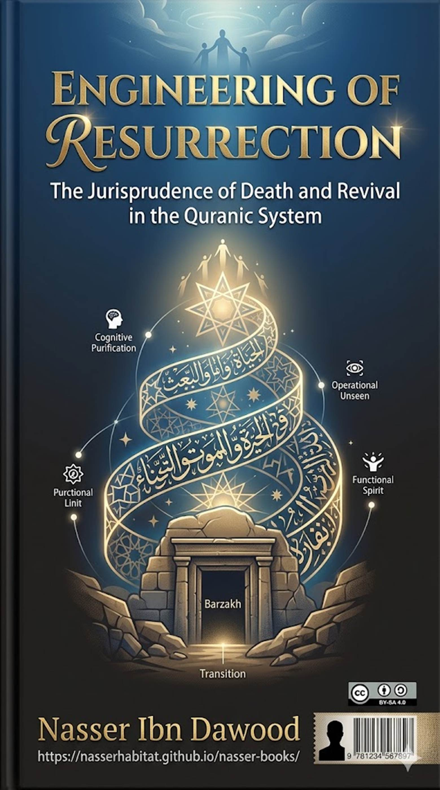

## The Jurisprudence of Death and Revival in the
Quranic System
### A Condensed Conceptual Summary for the International Reader
---
**I. The Global Knowledge Manifesto**
Knowledge is a universal right.
The author firmly believes that wisdom should not be locked behind paywalls or
language barriers.
- **Global
Access Policy:** All books in this library are available for free in multiple
digital formats (PDF, HTML, DOCX, TXT).
- **The Digital Library:** As of early 2026, the
collection hosts 68 volumes (34 in Arabic and 34 in English), fully optimized
for AI‑assisted research and digital archiving.
- **Official Platforms:**
- Main
Website: `nasserhabitat.github.io/nasser-books/`
- GitHub:
`nasserhabitat/nasser-books`
**II. Translator’s Note: The Bridge of Meaning**
This English edition is a
condensed conceptual adaptation. It is not a word‑for‑word
translation, but rather an **"extraction of essence."** It presents
the core philosophical framework in accessible English, omitting the exhaustive
linguistic debates and classical references found in the original Arabic text.
For the academic researcher: The
original Arabic version remains the primary source for comprehensive linguistic
analysis, detailed exegesis (Tafsir), and the complete bibliography.
---
For centuries, death has been the
ultimate human terror – a black hole that swallows all meaning. Traditional
readings either saw it as sheer nothingness (materialism) or wrapped it in a
fog of mystery and intimidation (folk religion). But when we approach the
Quranic text with a **"sharpened eye"** – what this book calls the
"Iron Sight" – we discover that death is not an end. It is a **law of
transition**, a functional phase within an **existential engineering** designed
by the Creator.
This book is not a conventional
sermon about the afterlife. It is a **"User Manual"** that dismantles
the structure of death and revival as **functional stages** that the human
"self" (Nafs) passes through. We are not
dealing here with a descriptive unseen (waiting for events to happen), but with
an **operational unseen** – laws that govern our movement right now.
**Why
"Engineering of Resurrection"?**
Because resurrection is not merely
rising from graves. It is:
1. **Cognitive resurrection** – freeing the mind
from the illusion of non‑existence.
2. **Functional resurrection** – redefining life as
a testing ground (sandbox) with a clear purpose.
3. **Civilizational resurrection** – using the
understanding of death to build a human being who invests in "excellence
of action" with the certainty of one who sees the final outcome.
---
The Quran calls itself an
"Arabic **Tongue**" (Lisan), not merely an "Arabic
language." Language is a social tool; the Tongue is a **logical system**
that connects thought to reality. In this framework, every Quranic word (death,
life, resurrection, gathering) has precise **coordinates** within a network of
meanings. A word describes not **what happened** but **how the system works**.
**Three
Golden Rules of Reading:**
1. **No synonymy** – "death" (mawt) is not identical to "dying" (wafat); "resurrection" (ba'th)
is not identical to "rising" (nushur).
2. **Functionality** – We ask: what function does
death or revival serve in this context?
3. **Cosmic consistency** – The Quranic Tongue
expresses laws that apply to the individual, society, the cosmos, and the atom
in one unified pattern.
The Quran contains stories of
reviving the dead (e.g., Abraham’s birds, Jesus’ miracles, the People of the
Cave). Traditional readings see these as **exceptions** to nature. In this
book, we see them as **prototypes** – events that reveal **hidden laws**, not
cancel them.
- **Historical
event** = the physical demonstration of a law.
- **Cosmic law (Sunnah)** = the unchanging
mathematical/logical equation behind the event.
**Why
does this matter?**
If resurrection is only a future
event, it remains a distant unknown. But if resurrection is **"the law of
restoring functionality after functional non‑existence"** , it
becomes a daily program for individuals and nations to recover their
civilizational role.
The unseen (al‑Ghayb) is often
misunderstood as a curtain behind which we cannot see. In this book, we split
it:
| **Descriptive
Unseen** | **Operational Unseen** |
|
:--- | :--- |
| God’s
essence, the exact shape of Paradise/Hell, the reality of the soul. | The laws
of resurrection, the mechanics of consciousness transfer, the reasons for the
rise and fall of nations. |
| Function of the mind: **Belief and acceptance**
(no need to draw engineering diagrams). | Function of the mind: **Research,
extraction, activation**. |
|
**"How" is hidden.** |
**"How" is discoverable** through walking the earth and observing the
patterns.
|
Death and resurrection in this
book belong to the **operational unseen**. We do not ask "what does the
soul look like?" We ask: **What is the law of transition? Where does
information go at death? How is it recalled?**
---
Before you were born, you were not
"nothing" (absolute non‑existence). You were **material** – clay,
water, dust – but **functionally dead**. The Quran says: *"Has there come
upon man a period of time when he was not a thing remembered?"* (76:1).
You were a **"thing"** but not yet a **"mentioned one"** –
no identity, no responsibility, no tools of perception.
**Characteristics
of the First Death:**
- No awareness, no accountability, no obligation.
- Pure potentiality – the clay awaits the breath
of life.
**Functional
relevance today:** Any idea, project, or nation that possesses raw materials
(land, people, resources) but lacks the **operating methodology** is living the
First Death.
The First Revival is the
**injection of functionality** into matter. It includes:
- The **breath of the spirit** (not just
biological life, but the **higher operating system**).
- The activation of **hearing, sight, and the
heart** (Fu’ad) – the central processor that links
perception to responsibility.
**Why
were we given life?**
Not merely to survive, but to be
tested: *"Who created death and life to test you – which of you is best in deed"* (67:2). Life grants you **free will** – the
ability to disobey your material instincts for the sake of higher values.
The Quran maps a precise timeline
**(two deaths, two lives)** :
| Stage
| Phase | Function |
|
:--- | :--- | :--- |
| First
Death | Functional non‑existence (pre‑life) | Raw material
waiting
|
| First Revival | Earthly life (testing) |
Earning and choosing |
| Second Death (Imatah)
| Barzakh (interval) | Archiving and waiting |
| Second Revival | Resurrection (re‑embodiment)
| Recompense and settlement |
**Why
must we die?**
Because the material body is not
designed for eternity. Death is the **"submission of the answer
sheet"** – the end of the exam. The return (*"then to Him you will be
returned"*) is not spatial but **informational** – every atom of your
deeds goes back to the Source for sorting.
---
Arabic morphology distinguishes
four crucial terms:
| Term
| Meaning | Functional Equivalent |
|
:--- | :--- | :--- |
| **Al‑Mawt** (death as
process) | Cessation of agency | System shutdown |
| **Al‑Mayyit** (light pronunciation) | A being that has
actually died (completed) | Archived / Offline |
| **Al‑Mayyit** (with shadda –
heavy) | A living being bound to die inevitably | Expiring / Online with
deadline
|
| **Al‑Maytah** (carrion) | A dead body not purified by
proper slaughter | Corrupted file / spoiled data |
**Key
insight:** When the Quran tells the Prophet *"You are mayyit
(inevitably dying) and they are mayyit"*
(39:30), it uses the **heavy** form. This breaks the illusion of immortality.
It says: your functionality is temporary; turn your life into values that
outlive you.
| | **Ihya’ (Revival)** | **Ba‘th (Resurrection)** |
|
:--- | :--- | :--- |
| Domain
| Often in this world (dead land, dead hearts via revelation) | Transition from
Barzakh to Judgment Day |
| Goal | Continuation of function or repair of a
malfunction | Moving to a new platform (accounting or sovereignty) |
| Nature | "Restarting" an engine that
was stopped | Summoning from the archive (throwing forward) |
| Example | Reviving a dead civilization through
reform | Final rising of bodies for recompense |
**Why
is this distinction important?**
Revival gives you **ability**;
resurrection gives you **direction**. Every morning you are "revived"
from sleep (minor death), but only those with a mission are
"resurrected" into purpose.
These three terms are often confused. They are sequential stages:
| Stage
| Technical Process | Functional State |
|
:--- | :--- | :--- |
| **Nushur**
| Spreading out what was folded (deeds, scrolls) | Decompression – data becomes
visible
|
| **Hashr** | Forced gathering from all places to one
location | Centralized sorting – no escape |
| **Qiyamah** | Standing before the Truth | The final
presentation – no more movement, only confrontation |
This is not frightening mythology.
It is a **technical system** ensuring absolute justice: first the data is
decompressed, then it is assembled, then the defendant stands for accounting.
---
### Chapter
10: The Inevitability of Tasting – The Self as a Continuous Entity
The verse does not say "every
soul will die" (as if it ceases). It says **"every soul shall taste
death"** (3:185). Why "taste"?
- **Tasting**
implies the taster remains after the experience. You taste food, you do not
become the food.
- The **body** dies (physically decomposes). The
**soul (Nafs)** – the conscious entity, the data
processor – tastes the event of separation.
**Consequence:**
Those who realise they will **taste** death and not
**annihilate** into nothingness change their behaviour.
Death is not a black hole; it is a **gateway**. Fear is replaced by preparation.
Death is not a wall that crashes
the self. It is a **phase transition** (like water to vapour).
The matter does not vanish; its **operational
properties** change.
- **Decoupling:**
The soul separates from the body’s chemistry, freeing itself from material
inertia.
- **Change in perception speed:** In this world we
perceive slowly via senses. After death, the medium falls away, and perception
becomes **instantaneous and direct**. *"We have removed from you your
cover, so your sight today is iron"* (50:22).
This understanding turns mourning
into **awareness of necessary evolution**. Death is the elevator that carries
us through the levels of creation.
The Quran calls the worldly life
*"mata‘ al‑ghurur"* (3:185) – "deceptive
enjoyment." **Ghurur** comes from the root
meaning " outward appearance covering the inner reality."
- The
world is designed to **look** solid, permanent, and ultimate. This is necessary
for the test.
- If the afterlife were visible as the sun, there
would be no genuine choice. The illusion of permanence grants you the
**freedom** to believe or disbelieve.
**How
to break the illusion:**
Use the world as a **tool** (Mata‘) not as the **goal**. Build for the permanent phase
(the Hereafter) using the tools of the temporary phase (this world).
---
When the Quran tells the Prophet
*"You are mayyit (inevitably dying) and they are
mayyit"* (39:30), it delivers a shocking
positive blow to human consciousness.
- **The
law:** Death is the **scissors** that cut between the **carrier** of the
message and the **content** of the message.
- **The function:** Telling the Prophet and his
followers that he will die is a guarantee of the **independence of the
methodology**. Islam is not a "personal property"; it is a cosmic law
that continues whether the original carrier is present or gone.
This destroys the tendency to
deify leaders. True faith is built on the **truth of the message**, not on the
**longevity of the messenger**.
How does a methodology remain
alive after its founder dies?
- **Succession
(Istikhlaf):** *"Then We caused the Book to be
inherited by those We chose from Our servants"* (35:32). The carrier dies
(archiving), but the **Book** (the program) remains active in the **processor**
(the mind of the community).
- **Ongoing charity (Sadaqah Jariyah):** The dead
person continues to grow in rewards if they leave behind an **operational law**
(knowledge that benefits, righteous child, perpetual charity). You are
**functionally alive** as long as your impact
continues to change the coordinates of reality.
- **Renewal (Ijtihad):** If the mind stops
connecting the methodology to reality, the methodology becomes a **corpse**.
Revival is the **re‑injection of life** into
the functional laws.
*"Then on the Day of Resurrection you will dispute before your Lord"*
(39:31). This is not a yelling match. It is the **final data confrontation**.
- In
this world, falsehood dresses itself in the robe of truth. Arguments remain
unresolved.
- At resurrection, the **organs testify** –
hands, feet, skin – because they are storage units that recorded the physical
reality of the deed. The **tongue** (the tool of argument) is silenced. The
**system confesses against itself**.
This awareness changes behaviour: seek not victory in debate, but **agreement with
the truth**.
---
## Part
Six: Mechanics of Connection and Prevention
The Quran states: *"Indeed
you do not make the dead hear"* (27:80). But what does "dead"
mean here?
| Sensory
Hearing | Functional Hearing (Response) |
|
:--- | :--- |
| Physical
ability of the ear to convert sound waves into neural signals. | The ability of
the **heart** (Fu’ad) to process the signal into behavioural change. |
| Shared by believer and disbeliever, living and
(in some states) the physically dead. | The real meaning of *"Only those
who **hear** will respond"* (6:36). |
| The grave‑dweller may perceive sounds (as in some
narrations), but cannot act upon them. | The "functionally dead" –
alive but with a disabled central processor – also do not **respond**. |
Thus, "not making the dead
hear" means: **You cannot force a response from a system that has closed
its input channels** (whether in the grave or in a state of cognitive
arrogance).
*"Nor can you make those in the graves hear"* (35:22). In this book,
the **grave** is not only a hole in the ground. It is any **closed system**
that surrounds the entity and prevents interaction with the outside truth.
- **Functional
grave:** Any environment that blocks the entry of revelation’s light or
rational critique.
- **Examples:** A mind trapped in blind tradition,
a society living on past glories without producing anything new, a person
imprisoned by their own ego.
**Resurrection
begins with "scattering the graves"** (82:4) – overturning these
closed environments and breaking their walls. The intellectual revolution that
brings a nation out of silent history into the space of civilizational action.
---
The Quran distinguishes **Mawt** (death as cessation) from **Wafat**
(dying as completion/fulfillment). *"Allah takes (yatawaffa)
the souls at the time of their death, and those that have not died during their
sleep"*
(39:42).
- **Wafat** comes from the root meaning "full payment / completion." It
is the **inventory** process.
- **Sleep** is a **minor wafat**
– the soul is temporarily withdrawn, the daily data is uploaded (daily update),
and if the deadline has not come, it is sent back (reboot).
**Impact:**
You are trained daily to disengage from the material body. The major death is
only the permanent closure of the file, not a different principle.
*"We will set up the just scales on the Day of Resurrection, so no soul
will be wronged in anything"* (21:47).
- In
this world, deeds appear weightless (a word spoken, a movement done). In the
afterlife, they become **mass**.
- **What gives mass to a deed?** Sincerity (Ikhlas)
and conformity with the Truth. A small act with great sincerity can weigh
mountains; a huge act done for show weighs zero.
The balance is a **quality
filter**, not a quantity counter.
*"And that to your Lord is the final end (al‑Muntaha)"*
(53:42).
The Muntaha is the point where
**becoming** stops and **being** begins.
- In
this world and Barzakh, we are in a state of constant
change (becoming). In the Muntaha, the entity settles into its final state.
- **Eternity (Kholoud)** is not boring repetition.
It is **liberation from linear, decaying time**. Death itself is slaughtered
(as in a famous narration). The system has reached its operational perfection.
---
Abraham asked: *"Show me how
You give life to the dead"* (2:260). God’s answer was a **procedural
recipe**:
1. **Take four birds** – the fleeting, unformed ideas (birds = what
"flies" in your imagination).
2. **Cut and mix them** – break down the idea into
its functional components.
3. **Place a part on each hill** – embed those
components into established knowledge bases (the "mountains" of
tradition and reality).
4. **Call them** – activate the system according to
the laws (God’s permission). The birds come to you **running**.
**This
is not magic.** It is the engineering of bringing a dead idea to life:
deconstruct, distribute, embed in stable foundations, then invoke the hidden
laws. The result: the idea becomes a **running reality**.
Jesus said: *"I create for
you from clay the likeness of a bird, then I breathe into it and it becomes a
bird by God’s permission; and I heal the blind (Akma) and the leper (Abras) and I give life to the dead"* (3:49).
- **The
Akma** (epileptic‑blind, born unable to see) = the mind drowning
in accumulated data without the ability to sort truth from falsehood.
- **The Abras** (leper) = the mind whose sources
have been mixed; the pure (Birr) is contaminated with the impure (Sadd).
Jesus’ healing is **cognitive
purification** – not physical medicine. He restores the **ability to see
patterns** and the **purity of sources**. Then, and only then, can he
"give life to the dead" (re‑activate
dead minds).
*"Forbidden to you are carrion (al‑Maytah), blood, the flesh of swine, and that which
has been dedicated to other than Allah"* (2:173).
This is not a simple diet. It is a
**firewall**:
- **Carrion**
= ideas and systems that have lost their vitality and are no longer fit for the
present reality. Consuming them poisons the intellectual system.
- **Blood** = the **energy flow** (economic,
cognitive) of society. Spilling it outside proper channels causes social haemorrhage.
- **Swine (metaphor)** = systems that lack **output
control** – inconsistent, unpredictable, consuming everything without
discernment.
- **Dedicated to other than Allah** = any system
that serves a false source (idols, tyranny, pure ego) instead of the supreme
Law‑Giver.
**The
prohibition is a filter.** It protects the Muslim engineer’s mind from
consuming dead ideas, wasting energy on side battles, or adopting
uncontrollable methodologies.
---
The goal of this book is to shape
the **"Resurrection Human"** – one who does not wait for resurrection
as a distant unseen event, but lives it as a daily
state of awareness.
**Qualities
of the Resurrection Human:**
- **Kills their old ideas** – has the courage to
dismantle knowledge systems that have lost validity.
- **Revives their new ideas** – applies the
protocol of revival through connecting to laws and field action.
- **Moves with awareness** – knows that life is not
the opposite of death, but the result of correctly managing the transition from
stillness to striving.
**Final
Golden Rules:**
1. **Unity of source and destination** – You start
from "death" (functional non‑existence) and end at "the final end"
(eternity). Everything between is a cognitive laboratory.
2. **Centrality of functional spirit** – True death
is the cessation of agency. A nation that produces no values
is **dead** even if it walks in markets.
3. **The inevitability of engineering accounting** –
The scales of the Hereafter are a precise technical evaluation of the mass of
sincerity and the weight of truth.
4. **Freeing consciousness from the illusion of
annihilation** – Knowing that you **taste** death and do not **cease** gives
you civilisational courage.
**To
the Reader:**
This book is not meant to be
merely a text you read. It is intended as a **protocol** to change your view of
yourself and the universe. The Resurrection Human lives in this world with the
eye of a traveller, the heart of an investor, and the
mind of an engineer who knows that every brick he places today will be a
standing entity tomorrow on the field of presentation.
We end with the certainty with
which we began: *"And that to your Lord is the final end"* (53:42). So towards that final end, let us
race in excellence of deed, purity of intention, and strength of resolve.
---
| Arabic Term | Functional Translation |
|
:--- | :--- |
| Mawt (الموت) | Functional
cessation, system shutdown |
| Hayah (الحياة) | Operational agency, testing mode |
| Nafs (النفس) | Conscious self,
data‑processor |
| Tadhkiyah (التذكية) | Cognitive purification by intelligence and discernment |
| Ba‘th (البعث) | Resurrection as summoning and re‑embodiment |
| Nushur (النشور) | Decompression of deeds (unfolding) |
| Hashr (الحشر) | Forced gathering and sorting |
| Qiyamah (القيامة) | Standing before the Truth for final presentation |
| Al‑Muntaha (المنتهى) | The final destination where becoming stops and being begins |
| Sabr al‑Hadid (البصر الحديد) | Iron sight – penetrating, un‑deceivable
perception
|
---
**End of the condensed summary (approx. 28 pages in standard Word format).**
؟